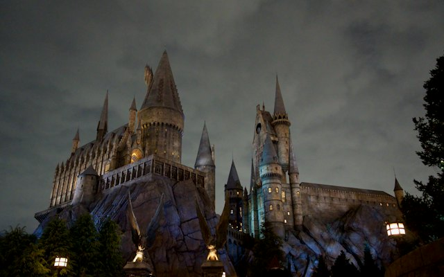
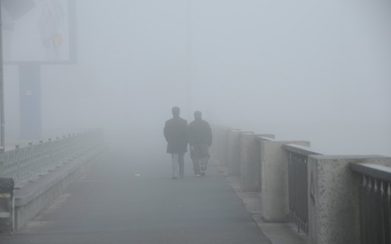
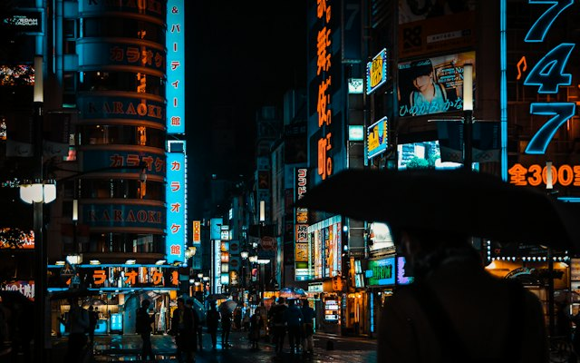
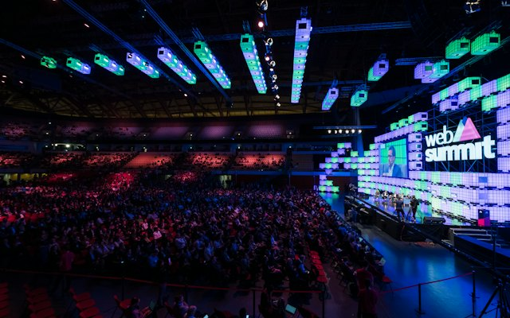
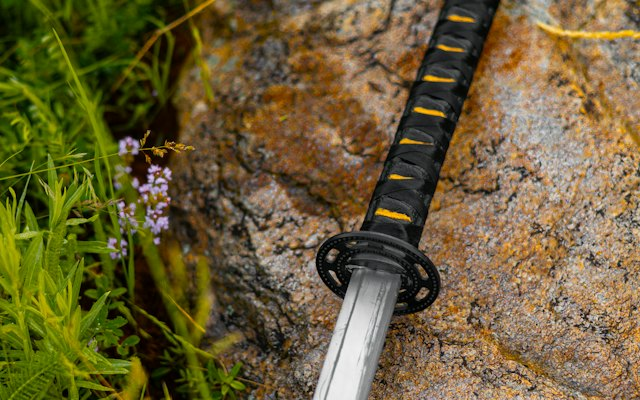
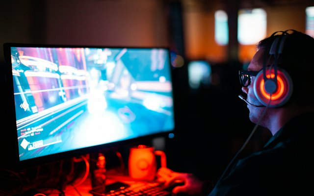
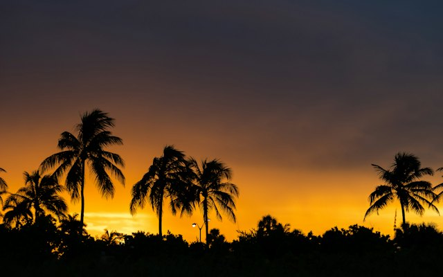

AÇÃO
Marvel's Wolverine vende 3 milhões de cópias na primeira semana
Exclusivo de PS5 se torna a estreia mais rápida da Insomniac.
Por Marina Lopes - 22 set 2026

RPG
The Blood of Dawnwalker recebe modo de dificuldade extrema
Patch também corrige quedas de desempenho nas cidades maiores.
Por Rafael Costa - 20 set 2026

TERROR
Silent Hill: Townfall ganha trailer final envolto em névoa
Vídeo apresenta a cidade costeira e uma nova criatura.
Por Júlia Andrade - 19 set 2026

EVENTOS
Tokyo Game Show termina mais cedo por causa de tufão
Estandes fecharam no dia 20 e as apresentações foram para o online.
Por Pedro Tanaka - 21 set 2026

ESPORTES
NBA 2K27 promete física de quadra refeita do zero
Nova tecnologia de animação deixa dribles e contatos mais realistas.
Por Lucas Ferreira - 18 set 2026

ESTRATÉGIA
Fire Emblem: Fortune's Weave aposta em laços entre heróis
O novo sistema muda os diálogos conforme as amizades no exército.
Por Ana Ribeiro - 17 set 2026

REMASTER
The Witcher 3 Remastered será gratuito para quem tem o jogo
Versão inclui texturas novas e iluminação refeita.
Por Bruno Alves - 28 set 2026

EVENTOS
BlizzCon 2026 termina com expansão surpresa anunciada
Fãs lotaram Anaheim para o retorno do evento presencial.
Por Camila Souza - 13 set 2026

AÇÃO
Onimusha: Way of the Sword agrada com combate desafiador
A crítica elogia os duelos e a ambientação no Japão feudal.
Por Diego Martins - 5 set 2026

SOBREVIVÊNCIA
Valheim chega aos consoles com crossplay completo
Vikings do PC, Xbox e PlayStation agora exploram o mesmo mundo.
Por Fernanda Rocha - 10 set 2026

AÇÃO
CONTROL Resonant revela novos poderes sobrenaturais
A Remedy mostrou habilidades inéditas em uma demo estendida.
Por Thiago Mendes - 16 set 2026

INDIE
Moonlighter 2 adiciona modo cooperativo local
Dois jogadores agora podem administrar a loja e explorar juntos.
Por Larissa Pinto - 15 set 2026

HARDWARE
Switch 2 recebe atualização que melhora a bateria
O modo portátil ganha até uma hora a mais de autonomia.
Por Gustavo Lima - 12 set 2026

E-SPORTS
Final brasileira de Valorant bate recorde de audiência
Decisão reuniu mais de 1 milhão de espectadores simultâneos.
Por Beatriz Nunes - 8 set 2026

AVENTURA
GTA VI mostra mais de Vice City em novo trailer
Vídeo revela praias, pântanos e a vida noturna da cidade.
Por Carlos Duarte - 25 set 2026